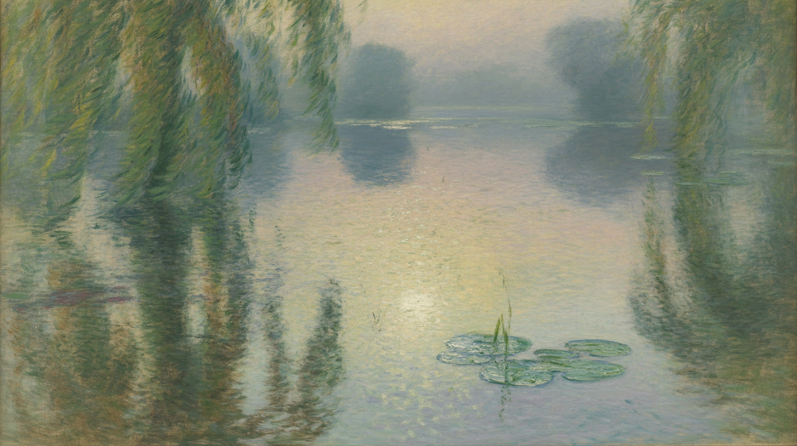

It’s hard to believe that I started this newsletter over four years ago! I began writing during early COVID-19 to provide accessible climate analysis to a broader audience. I intended to base my arguments firmly on primary (observed) data rather than regurgitating current science in lay terms, to show how scientists think and work. I continue to believe in what I stated at the outset:
Historians will write, “If only they’d followed the science…” but Science isn’t a religion that has followers and infidels. Science is a sport that wrestles truth from conjecture .
Some of you may have noticed that my productivity has declined over the past few months. I haven’t added an installment in nearly a month, which, since going into “reruns” about a year ago, is my longest stretch of silence.

I expected only a small following, but it has grown beyond my modest expectations. I am eternally grateful to those of you who have remained with me over the years, especially those who have become paying subscribers. With all the recent turmoil, I know I haven’t been living up to my end of the deal: Finding fresh material that inspires me has become challenging. If you would like a full refund, please get in touch with me. Refunds are gladly given for what is essentially a charitable donation.
The most gratifying outcome of this effort has been the things I’ve learned, rather than the things I have written. I’ve found that over the years, I learn more when preparing a lecture than I ever did in class. A few revelations:
-
Increased carbon dioxide is the primary driver of climate change, but its relationship to global warming is more complex than I expected 1 . Because it is also an integral part of the biological carbon cycle, as well as a central feature of our economy, it will be practically impossible to reverse the increase without deliberate geoengineering, despite what some academicians claim.
-
At the same time, geoengineering is fraught with economic and social issues: there's a blame-first attitude, where ‘something’ is done, but others are expected to bear the costs 2 . That attitude is self-destructive and impossible to satisfy.
-
Non-profit advocacy organizations present their agendas, primarily aimed at securing financial support for their advocacy efforts. I’ve referred to them as “eco-grifters 3 ” because advocacy without engineering is just more unnecessary hot air.
-
International climate conferences (COPn) and organizations (IPCC, primarily) are no better than the non-profits. After 30 years of agreements and with many tools already in hand, the “international community” has produced volumes of analysis, plenty of hot air, but little in the way of effective treaties 4 .
-
The way we track climate change, carbon accounting, is a mess, and ‘offsets’ are a significant contributor to this issue. They fail to accurately reflect the cost of emissions, leading some to falsely believe that they’re helping to reduce their impact with a small financial contribution 5 . The atmosphere doesn’t care.
I’ve also had disappointments. First, following the sports analogy, science is a dialogue, not a monologue. One team on the field makes for a boring sport. When I presented data that contradicted conventional wisdom, I expected confrontation and a healthy debate. While I’ve had a few healthy debates, what I’ve gotten instead is deafening silence. Even in private conversations with colleagues who should know better, I've gotten dismissive rejections based on mere feelings. I expected the “comments” section to be lively; Instead, it is a wasteland.
This leads to my second disappointment, the observable decay of societal integrity among modern scientists. Social media and the “influencers” have accelerated the deterioration of thought among “ordinary” folks, but I had hoped that my fellow scientists would be immune to this decay. While information (in the form of data) has become increasingly accessible, the core of science, reasoned debate, has evolved into superficial talking points and references to “key opinion leaders” or “leading publications” that reveal little in terms of adaptable thinking or willingness to challenge assertions 6 . As I’ve said elsewhere, “In Science, agreement is poison.”
To be true to the scientific ideal, observable data that contradicts a theory ought to be debated, analyzed, and accounted for, rather than discarded with hand-waving explanations. If a theory disagrees with the data, then the theory must be incorrect ; most theories are flawed when taken to their extreme. These edge cases are where progress happens. Unfortunately, the seductive power of computation and the fact that computer models always provide an answer have led some reputable scientists to prefer complex models over simple data and intellectual debate.
Finally, I’ve had some surprises: I didn't expect an 'aha' moment about water as an underappreciated key to terrestrial carbon capture 7 , or a 'that's odd' moment when I discovered that mature rainforests don't grow yet absorb vast quantities of CO2 8 . These two surprises have led me in exciting directions and are providing me with more than enough dopamine at the moment.
So, I’m not on vacation, I’m not retired, I’m not off chasing the next big thing, and I haven’t given up hope. I simply won't write as regularly. Back issues remain worth reading, and I hope to return soon with fresh material as the inspiration strikes. Stay tuned. If you would like to add something, you know how to reach me.
See Michael Mann’s absurdist rant in this installment: